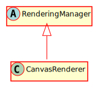

Hierarchy-Diagram
{kind=link}
Legend
 class
class
 abstract class
abstract class
Hierarchy
- RenderingManager
- CanvasRenderer
Index
Constructors
constructor
Returns CanvasRenderer
Properties
Protected ctx
Protected graphic
Protected origin
Protected resource
The ResourceManager
Protected scene
The scene currently being rendered
Protected tilemap
Protected ui
Protected world
Protected zoom
Methods
clear
Clears the canvas
Parameters
clearColor: Color
Returns void
initialize
Initialize the canvas for the game
Parameters
canvas: HTMLCanvasElement
width: number
height: number
Returns CanvasRenderingContext2D
render
Renders the visible set of CanvasNodes and visible portions of tilemaps, as well as any UIElement in UILayers
Parameters
visibleSet: CanvasNode[]
tilemaps: Tilemap[]
uiLayers: Map<UILayer>
Returns void
Protected render
Renders an animated sprite
Parameters
sprite: AnimatedSprite
Returns void
Protected render
Renders a graphic
Parameters
graphic: Graphic
Returns void
Protected render
Renders a specified CanvasNode
Parameters
node: CanvasNode
The CanvasNode to render
Returns void
Protected render
Renders a sprite
Parameters
sprite: Sprite
Returns void
Protected render
Renders a tilemap
Parameters
tilemap: Tilemap
Returns void
Protected renderUIElement
Renders a UIElement
Parameters
uiElement: UIElement
Returns void
set
Sets the scene currently being rendered
Parameters
scene: Scene
Returns void
An implementation of the RenderingManager class using CanvasRenderingContext2D.